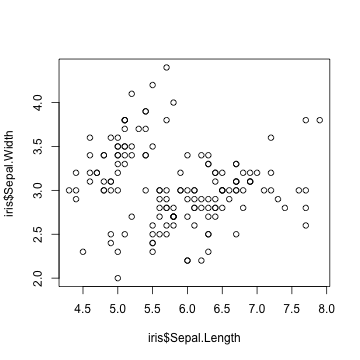
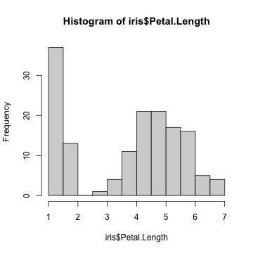
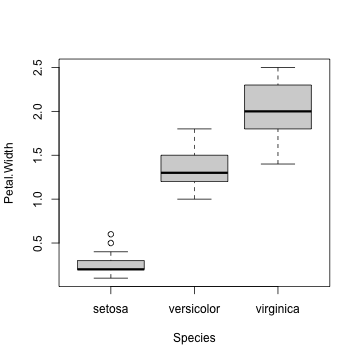

Hands-on R Lecture for Makino Lab
- Why do we use R?
- R basics
- Visualization with R
- Tidying and transforming data with R
- Statistical analysis with R
- File management with Git+GitHub
2019-10-09 生物棟大会議室
生データは情報が多すぎ
関係性も何も見えない
print(diamonds) carat cut color clarity depth table price x y z
<dbl> <ord> <ord> <ord> <dbl> <dbl> <int> <dbl> <dbl> <dbl>
1 0.23 Ideal E SI2 61.5 55 326 3.95 3.98 2.43
2 0.21 Premium E SI1 59.8 61 326 3.89 3.84 2.31
3 0.23 Good E VS1 56.9 65 327 4.05 4.07 2.31
4 0.29 Premium I VS2 62.4 58 334 4.20 4.23 2.63
--
53937 0.72 Good D SI1 63.1 55 2757 5.69 5.75 3.61
53938 0.70 Very Good D SI1 62.8 60 2757 5.66 5.68 3.56
53939 0.86 Premium H SI2 61.0 58 2757 6.15 6.12 3.74
53940 0.75 Ideal D SI2 62.2 55 2757 5.83 5.87 3.64
ダイヤモンド53,490個について10項目の値を持つ data.frame
要約統計量(平均とか分散とか)を見てみる
まあ何となく分かった気になる
dplyr::summarize_if(diamonds, is.numeric, mean) carat depth table price x y z
<dbl> <dbl> <dbl> <dbl> <dbl> <dbl> <dbl>
1 0.7979397 61.7494 57.45718 3932.8 5.731157 5.734526 3.538734
dplyr::summarize_if(diamonds, is.numeric, sd) carat depth table price x y z
<dbl> <dbl> <dbl> <dbl> <dbl> <dbl> <dbl>
1 0.4740112 1.432621 2.234491 3989.44 1.121761 1.142135 0.7056988
summary(diamonds) carat cut color clarity depth table price
Min. :0.2000 Fair : 1610 D: 6775 SI1 :13065 Min. :43.00 Min. :43.00 Min. : 326
1st Qu.:0.4000 Good : 4906 E: 9797 VS2 :12258 1st Qu.:61.00 1st Qu.:56.00 1st Qu.: 950
Median :0.7000 Very Good:12082 F: 9542 SI2 : 9194 Median :61.80 Median :57.00 Median : 2401
Mean :0.7979 Premium :13791 G:11292 VS1 : 8171 Mean :61.75 Mean :57.46 Mean : 3933
3rd Qu.:1.0400 Ideal :21551 H: 8304 VVS2 : 5066 3rd Qu.:62.50 3rd Qu.:59.00 3rd Qu.: 5324
Max. :5.0100 I: 5422 VVS1 : 3655 Max. :79.00 Max. :95.00 Max. :18823
J: 2808 (Other): 2531
x y z
Min. : 0.000 Min. : 0.000 Min. : 0.000
1st Qu.: 4.710 1st Qu.: 4.720 1st Qu.: 2.910
Median : 5.700 Median : 5.710 Median : 3.530
Mean : 5.731 Mean : 5.735 Mean : 3.539
3rd Qu.: 6.540 3rd Qu.: 6.540 3rd Qu.: 4.040
Max. :10.740 Max. :58.900 Max. :31.800
平均値ばかり見て可視化を怠ると構造を見逃す


データ可視化の重要性
情報の整理 → 正しい解析・新しい発見
データ可視化の重要性
情報の整理 → 正しい解析・新しい発見


そうは言ってもセンスでしょ? — NO!


ある程度はテクニックであり教養。
デザインの基本的なルールを
知りさえすれば誰でも上達する。

見せ方の吟味もRでやると捗るよ
平均値の差？ ばらつきの様子？ 軸はゼロから始まる？

こんな感じの図もRでラクラク描けるよ


Visualization with R: Index
Visualization is important(済)- R base plot
- ggplot2 package
- basics
- facetting
- save images


data.frame
iris はアヤメ属3種150個体に関する測定データ。
Rに最初から入ってて、例としてよく使われる。
print(iris) Sepal.Length Sepal.Width Petal.Length Petal.Width Species
<dbl> <dbl> <dbl> <dbl> <fct>
1 5.1 3.5 1.4 0.2 setosa
2 4.9 3.0 1.4 0.2 setosa
3 4.7 3.2 1.3 0.2 setosa
4 4.6 3.1 1.5 0.2 setosa
--
147 6.3 2.5 5.0 1.9 virginica
148 6.5 3.0 5.2 2.0 virginica
149 6.2 3.4 5.4 2.3 virginica
150 5.9 3.0 5.1 1.8 virginica
長さ150の数値ベクトル4本と因子ベクトル1本。
R標準のグラフィックス
描けるっちゃ描けるけど。カスタマイズしていくのは難しい。
plot(iris$Sepal.Length, iris$Sepal.Width)
きれいなグラフを簡単に描けるパッケージを使いたい。
R標準のグラフィックス
描けるっちゃ描けるけど。カスタマイズしていくのは難しい。
hist(iris$Petal.Length)
きれいなグラフを簡単に描けるパッケージを使いたい。
R標準のグラフィックス
描けるっちゃ描けるけど。カスタマイズしていくのは難しい。
boxplot(Petal.Width ~ Species, data = iris)
きれいなグラフを簡単に描けるパッケージを使いたい。
ggplot2

- tidyverseパッケージ群のひとつ
- “The Grammer of Graphics” という体系に基づく設計
- 単にいろんなグラフを「描ける」だけじゃなく
一貫性のある文法で合理的に描ける


R標準のプロットとは根本的に違う
いきなりggplot2から使い始めても大丈夫。
基本的な使い方: 指示を + していく
ggplot()このデータでよろしくgeom_*()点や線をよろしくtheme_*()軸とか背景の見た目をよろしく

基本的な使い方: 指示を + していく
ggplot()このデータでよろしくgeom_*()点や線をよろしくtheme_*()軸とか背景の見た目をよろしく
ggplot(data = diamonds) # diamondsデータでキャンバス準備
# geom_histogram(aes(x = carat)) + # x軸caratのヒストグラムで
# theme_classic(base_size = 20) # クラシックなテーマで
基本的な使い方: 指示を + していく
ggplot()このデータでよろしくgeom_*()点や線をよろしくtheme_*()軸とか背景の見た目をよろしく
ggplot(data = diamonds) + # diamondsデータでキャンバス準備
geom_histogram(aes(x = carat)) # x軸caratのヒストグラムで
# theme_classic(base_size = 20) # クラシックなテーマで
基本的な使い方: 指示を + していく
ggplot()このデータでよろしくgeom_*()点や線をよろしくtheme_*()軸とか背景の見た目をよろしく
ggplot(data = diamonds) + # diamondsデータでキャンバス準備
geom_histogram(aes(x = carat)) + # x軸caratのヒストグラムで
theme_classic(base_size = 20) # クラシックなテーマで
よくあるエラー
パッケージ名は ggplot2、関数名は ggplot:
> ggplot2(data = diamonds)
Error in ggplot2(data = diamonds) : could not find function "ggplot2"
関数名は合ってるはずなのに…
> ggplot(data = diamonds)
Error in ggplot(data = diamonds) : could not find function "ggplot"
パッケージ読み込みは新しくRを起動するたびに必要:
library(tidyverse)途中経過を取っておける
p0 = ggplot(data = diamonds)
p1 = p0 + geom_point(mapping = aes(x = carat, y = price))
p2 = p1 + theme_classic(base_size = 20, base_family = "Helvetica")
p3 = p2 + facet_wrap(~ clarity)
print(p3)p0 とか p1 あとで使うよ
ggplot() に渡すのは整然データ tidy data
- 1行は1つの観測
- 1列は1つの変数
- 1セルは1つの値
- この列をX軸、この列をY軸、この列で色わけ、と指定できる！
print(diamonds) carat cut color clarity depth table price x y z
<dbl> <ord> <ord> <ord> <dbl> <dbl> <int> <dbl> <dbl> <dbl>
1 0.23 Ideal E SI2 61.5 55 326 3.95 3.98 2.43
2 0.21 Premium E SI1 59.8 61 326 3.89 3.84 2.31
3 0.23 Good E VS1 56.9 65 327 4.05 4.07 2.31
4 0.29 Premium I VS2 62.4 58 334 4.20 4.23 2.63
--
53937 0.72 Good D SI1 63.1 55 2757 5.69 5.75 3.61
53938 0.70 Very Good D SI1 62.8 60 2757 5.66 5.68 3.56
53939 0.86 Premium H SI2 61.0 58 2757 6.15 6.12 3.74
53940 0.75 Ideal D SI2 62.2 55 2757 5.83 5.87 3.64
参考:
data(package = "ggplot2")
http://r4ds.had.co.nz/tidy-data.html
https://speakerdeck.com/fnshr/zheng-ran-detatutenani
Aesthetic mapping でデータと見せ方を紐付け
aes() の中で列名を指定する。
p0 + geom_point(mapping = aes(x = carat, y = price,
color = color, size = clarity))データによらず一律で見せ方を変える
aes() の外で値を指定する。
p0 + geom_point(mapping = aes(x = carat, y = price),
color = "darkorange", size = 6, alpha = 0.4)色パレットの変更 scale_colour_*()
個々の色を自分で決めず、既存のパレットを利用するのが吉。
e.g., ColorBrewer,
viridis
(色覚多様性の対策にも有効)
#pQ+ scale_colour_brewer(palette = "Spectral")
pQ + scale_colour_viridis_c(option = "magma", direction = -1)
値に応じて切り分けて表示 (1変数facet)
ggplotの真骨頂！ これをR標準グラフィックスでやるのは結構たいへん。
p1 + facet_wrap(~ clarity, ncol = 4L)値に応じて切り分けて表示 (≥2変数facet)
ggplotの真骨頂！ これをR標準グラフィックスでやるのは結構たいへん。
p1 + facet_grid(cut ~ clarity)
多変量データの俯瞰に便利
値を変えず座標軸を変える scale_*, coord_*
ggplot(data = diamonds, aes(carat, price)) +
geom_point(alpha = 0.25) +
scale_x_log10() +
scale_y_log10(breaks = c(1, 2, 5, 10) * 1000) +
coord_cartesian(xlim = c(0.1, 10), ylim = c(800, 12000)) +
labs(title = "Diamonds", x = "Size (carat)", y = "Price (USD)")データと関係ない部分の見た目を調整 theme
既存の theme_*()
をベースに、theme() 関数で微調整。
p1 + theme_bw() + theme(
panel.background = element_rect(fill = "khaki"), # 箱
panel.grid.major = element_line(colour = "red"), # 線
axis.title = element_text(size = 32), # 文字
axis.text = element_blank() # 消す
)論文のFigureみたいに並べる
別のパッケージ (cowplot や patchwork) の助けを借りて
pAB = cowplot::plot_grid(p2, p2, labels = c("A", "B"), nrow = 1L)
cowplot::plot_grid(pAB, p2, labels = c("", "C"), ncol=1L)ファイル名もサイズも再現可能な作図
widthやheightが小さいほど、文字・点・線が相対的に大きく
# 7inch x 300dpi = 2100px四方 (デフォルト)
ggsave("dia1.png", p1) # width = 7, height = 7, dpi = 300
# 4 x 300 = 1200 全体7/4倍ズーム
ggsave("dia2.png", p1, width = 4, height = 4) # dpi = 300
# 2 x 600 = 1200 全体をさらに2倍ズーム
ggsave("dia3.png", p1, width = 2, height = 2, dpi = 600)
# 4 x 300 = 1200 テーマを使って文字だけ拡大
ggsave("dia4.png", p1 + theme_bw(base_size = 22), width = 4, height = 4)


他にどんな種類の geom_*() が使える？
なんでもある。 公式サイトを見に行こう。


微調整してくと最終的に長いコードになるね…
うん。でもすべての点について後から確認できるし、使い回せる！
ggplot(diamonds) +
geom_boxplot(aes(y = carat, x = cut, color = cut)) +
theme_classic(base_size = 15, base_family = "Helvetica") +
coord_cartesian(ylim = c(-1, 6)) +
labs(title = "Diamonds", x = "Size (carat)", y = "Price (USD)") +
theme(axis.title.x = element_text(color = "black", size = 30),
axis.title.y = element_text(color = "black", size = 30),
axis.text.x = element_blank(),
axis.text.y = element_text(color = "black", size = 30),
axis.line.x = element_line(),
axis.line.y = element_line(),
axis.ticks.length = unit(8, "pt"),
panel.background = element_blank(),
panel.grid.major = element_blank(),
panel.grid.minor = element_blank(),
legend.position = "none",
plot.margin = grid::unit(c(0.5, 0.5, 1, 0.5), "lines"))発展的な内容
- ggplot2をさらに拡張するパッケージも続々
- アニメーション gganimate
- ラベル付け ggrepel
- グラフ/ネットワーク ggraph
- 系統樹 ggtree
- もちろん地図とかも描ける
- OK, Google. “ggplot 地図”
- ggplot2は3Dが苦手
- 本当に3Dが必要? 色分けやファセットで足りない?
- 別のパッケージ(rgl, plotly)でやる。
Visualization with R: Summary
- First of all, plot it!
- 要約統計量ばかり見てると大事なものを見逃す
- What kind of plot?
- だいたい何でもggplot2でできるよ。
- How to write?
- たす
p = ggplot(data) + geom_*() + scale_*() + theme_*() - 保存
ggsave("fig1.png", p, width=4, height=3, dpi=300) - 忘れるたびに調べる。徐々に身につく。
- ちゃんと描こうと思うと結構な量のプログラムになるね…
- そうだけど、一度書いたら後で使い回せるよ。
- Challenge
- Visualize preinstalled datasets in as many ways as possible.
- e.g.,
iris,diamonds,mpg,economics,txhousing.
参考
- R for Data Science — Hadley Wickham and Garrett Grolemund
- http://r4ds.had.co.nz/
- Book
- 日本語版書籍(Rではじめるデータサイエンス)
- Older versions
- 「Rにやらせて楽しよう — データの可視化と下ごしらえ」 岩嵜航 2018
- 「Rを用いたデータ解析の基礎と応用」石川由希 2019 名古屋大学
- ggplot2公式ドキュメント
- https://ggplot2.tidyverse.org/